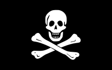

Пираты в древнее время
-
Слово «пират» происходит от греческого «разбойник».
-
Пиратство возникло еще в древние времена тогда же, когда возникло и мореплавание.
-
Первые известные упоминания о пиратах относятся к античности.
-
Пираты грабили суда и захватывали в плен торговцев, моряков и знатных людей. Так Юлий Цезарь был в плену у пиратов.

Золотой век пиратства
.jpeg)
Очередной бум пиратства случился в XVI веке, что было связано с географическими открытиями и развитием торговли и мореплавания.
Период с 1650 по 1720 годы известен как «Золотой век пиратства». Множество ценных грузов, такие как золото, серебро, различные травы и специи проходили через Мексиканский залив и Карибское море прямиков в Европу, что привлекало пиратов.
Виды пиратов
- Берберские пираты грабили у берегов Северной Африки
- Ликеделеры грабили на Балтийском море
- Греческих пиратов – клефты, нападали на турецкие суда.
- Вокоу - японские пираты, нападали на корабли из стран южной и восточной Азии.
- Каперы и корсары отличались от обычных пиратов, главным образом, наличие особого «удостоверения», позволяющее грабить корабли другого государства
- Во Франции, Англии и Нидерландах корсаров называли флибустьерами.

как закончился золотой век пиратсва
В 1690 году мощное
землетрясение разрушает
крупнейший пиратский порт Ройал,
главное на то время
В 1713 году война заканчивается,
многие моряки остались без работы.
Пираты продолжили
грабить всех подряд только уже
без лицензии.
На Карибах началось самое жестокое десятилетие
Лаффит был последним известным пиратом в Карибском море.
Он был схвачен и казнен испанцами в 1732 году.

флаг черной бороды

флаг Черного Барта

Флаг «Ситцевого Джека»
Флаг Эдварда Инглэнда

Флаг Джентльмена пиратов
Пираты в литературе
Основным источником для литераторов послужили пиратские мемуары.
Сочинение Александра Оливье Эксквемелина «Пираты Америки», изданное в 1678 г.
«Всеобщая история пиратов» Чарльза Джонсона, также была главным источником биографий многих известных пиратов
«Остров сокровищ» Р. Л. Стивенсона (1883) считается самым влиятельным произведением пиратской фантастики.
Даниэль Дефо не раз обращался к «пиратской» теме: «Робинзон Крузо» и «Жизнь и пиратские приключения капитана Сингльтона».
В XX в. на смену образу кровожадного убийцы пришел новый образ пирата: образ настоящего героя, сражающегося за правое дело, благородного и бесстрашного. Этот образ появился благодаря «Одиссеи капитана Блада» Рафаэля Сабатини.
Про пиратов снимается много фильмов: например «Пираты Карибского моря»

Заключение
- Пираты сыграли важную роль в войнах между государствами Европы
- Некоторые пираты совершали морские открытия.
- Пиратство оказало влияние на международное морское право, включая правила ведения войны на море и правила обращения с пленными.
- Образ пирата оказал огромное влияние на культуру народов.
- Образ пирата нашел свое отражение в произведениях литературы, живописи кинематографа, видеоигр.
- Пиратство - это не просто рассказы о приключениях и сокровищах; это сложная и многогранная часть нашей истории. Понимание истинного лика пиратства помогает нам лучше понять не только прошлое, но и наше собственное время.